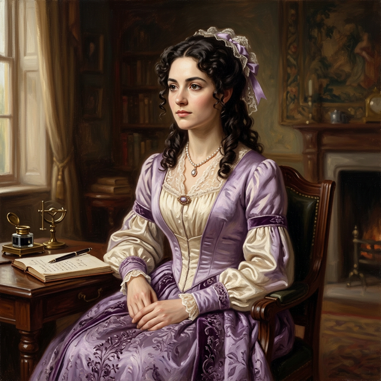
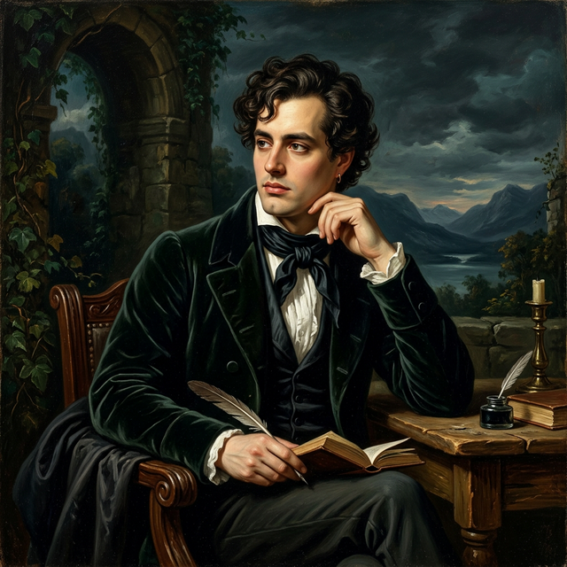
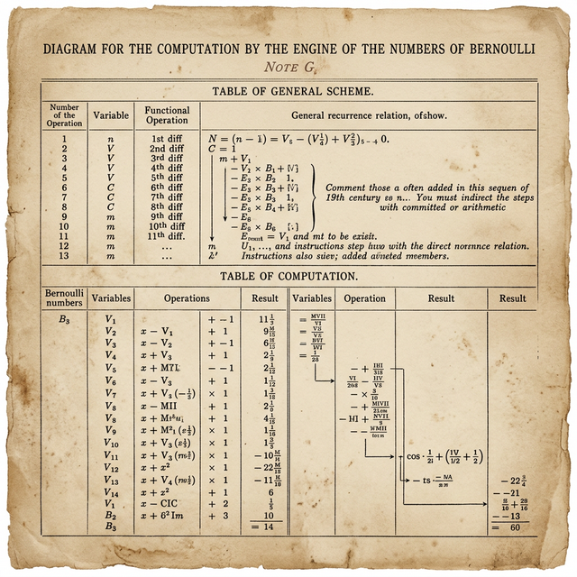

[ PROFILE_001 · PIONEER ]

The Enchantress of Number · 数字的魔女
1815.12.10 — 1852.11.27
史上第一位程序员是一位女士。
她主要因研究查尔斯·巴贝奇提出的机械通用计算机——分析机而闻名。
英国贵族，原姓拜伦（Byron），是英国著名诗人拜伦的唯一婚生子女。
拜伦为她取名为 Ada，寓意这是一首短小、古老、有声的歌曲。
在19世纪初的英国雾霾中，诞生了一个堪称冰与火之歌的结晶。
她的父亲是写下《唐璜》、浪漫到不可救药的疯批天才诗人 拜伦勋爵； 她的母亲是严谨理智、被戏称为平行四边形公主的数学家 Anne Isabella Milbanke。
这两个极端灵魂的婚姻仅仅维持了一个月便以男方出走惨淡收场。

Lord Byron
父亲 · 浪漫派诗人
Ada Lovelace
女儿 · 数字的魔女
带着对前夫浪漫疯病的极度恐惧，母亲将所有的期望倾注在女儿身上，试图用数学公式， 彻底锁死拜伦的狂热基因。
这个女孩，就是后世公认的世界第一位程序员 Ada Lovelace。
Ada 的童年并不幸福。为了防止她变成父亲那样的人，母亲请来最严厉的导师， 安排了被称为"复仇女神"的朋友全天候监视她。再加上从小体弱多病，14岁时甚至因麻疹瘫痪在床近一年， 她的身体仿佛被困在了一个小小的囚笼里。
数学并没有杀死她的想象力，反而成了她想象力的翅膀。
早在结识任何计算机先驱之前，12岁的阿达就系统研究了鸟类解剖学， 尝试用纸张、油丝和羽毛制作翅膀，甚至考虑引入蒸汽动力，煞有介事地写出了一本《飞行学》。
在常人看来枯燥的微积分变换，在她的眼里却充满了魔法。 她曾给导师写信说，那些变换形态的数学公式就像是精灵和仙女， 上一秒是一个模样，下一秒变成了截然不同的存在。
17岁的阿达在一次聚会上，结识了性格古怪的数学家 查尔斯·巴贝奇。 当时，巴贝奇正在展示他那台由纯机械齿轮咬合而成、尚未完工的差分机模型。
在场的达官贵人们只觉得这是一个大玩具，Ada 一眼看穿了这台机器的数学原理， 对其逻辑结构产生了极大的兴趣。巴贝奇被这位少女的才华深深折服， 两人自此开启了长期的通信与合作。
1842年，巴贝奇构想中更为宏大、具备现代通用计算机雏形的分析机在英国本土未获重视， 却在意大利引起了反响。Ada 接下了一个任务：将意大利工程师 Luigi Federico Menabrea 记录的关于分析机的法语论文翻译成英文。
但在翻译过程中，她为了更透彻地阐释分析机的潜力，自己动手添加了七条长长的注释（注记A到G）。 其中 注记G， Ada 极其详尽地拆解了如何用分析机来计算复杂的伯努利数。 这段逻辑严密的步骤，被后世广泛认为是世界上第一个公开发表的计算机程序。
当时包括巴贝奇在内的绝大多数人，都认为机器仅仅只能用来算数。 但 Ada 的直觉指出：分析机不仅能处理数字，如果能将音符、字母等事物间的基本关系转化为抽象的运算规则， 机器就能按照规则去创作精致的科学音乐，或者处理任何符号。
步入中年后，她深受宫颈癌病痛的折磨。在生命后期，她染上了赌博的恶习， 甚至试图用数学模型去预测赛马结果，最终惨败并欠下数千英镑的债务。
1852年11月27日，年仅36岁的 Ada 因病离世。她与那位未曾谋面、同样只活了36岁的诗人父亲一样英年早逝。 遵照她的遗愿，她最终被安葬在了诺丁汉郡的教堂，长眠于父亲拜伦勋爵的身旁。
为了纪念这位先驱，美国国防部在上世纪80年代将一种高级编程语言直接命名为 Ada； 每年的10月第二个星期二，也被定为 Ada Lovelace Day， 以鼓励和提升女性在STEM领域的地位。
诗意科学（Poetical Science）——她看待科学、数学以及整个世界的独特方法论和价值观。 她完美地融合了文学和数学的特质，自称为分析师（兼形而上学家）。
当时包括计算机之父巴贝奇在内的大多数科学家，都只把分析机看作一台超级数字粉碎机（用来算数）。 她的想象力预见到：如果数字可以代表音乐的音符或字母，这台机器就能按照规则处理符号、甚至创作出复杂音乐。
她的诗意科学思维不仅关注机器本身，还促使她去审视技术的边界。 她探究个人和社会应该如何将技术作为一种协作工具， 第一个在笔记中探讨了关于机器是否能具备原创思维（人工智能）的哲学问题。
数学从来不是冰冷枯燥的数字游戏，而是一种充满灵性的探索工具。
她深信，想要有效地应用数学和科学概念，直觉和想象力是必不可少的。 她将形而上学和数学放在同等重要的位置，都是用来探索我们周围未知世界的工具。 她在写给导师的信中，曾将微积分中那些看似毫不相干却又能奇妙转换的数学公式，比作精灵和仙女。
Ada 认为，数学中的运算（Operations）应该与被运算的对象以及运算结果严格区分开来。 她将运算定义为任何改变两个或多个事物之间相互关系的过程。 运算科学本身就是一门独立的科学，具有其自身的抽象真理和价值，就像逻辑学一样。 分析机最伟大的地方就在于，它在物理机械层面（负责运算的磨坊和负责存储数据的仓库）实现了理论上的分离。
Ada 对人类在进行数学推理时经常混淆概念感到不满。 她观察到，数学符号往往具有不断变化的含义：一个符号有时代表运算动作本身， 有时又代表运算产生的结果；数字有时代表量（数值大小），有时又代表运算（例如作为次幂的指数）。 她认为，分析机通过强制使用完全独立的机制来处理表示运算的数字和表示量的数字，从而消除了这种混淆。
Ada 认为，只要事物的基本关系可以用抽象的运算科学来表达，那么数学的适用范围就不仅限于传统的数字。 她的设想：如果音乐和声学中的音调基本关系能够被转化为机器可以理解的运算规则，数学可以创作出音乐作品。 她并没有把数学仅仅看作是算术或数字的计算，而是把它看作是一种处理宇宙中事物内在逻辑和关系的通用语言。
Ada 对人工智能（AI）的看法，在计算机科学史上具有里程碑式的意义。 她对机器是否具备智能的论断非常出名，后来甚至被 Alan Turing 专门引用并命名。
在 1950 年发表的里程碑式论文《计算机器与智能》中，图灵提出并以此命名了 Lady Lovelace's Objection。这个异议的核心观点是：机器没有原创性。
Ada 认为，机器只是人类意志的延伸，是一个完美的执行者， 但它本身不具备产生新想法、新知识或闪光点的能力。
Turing 将 Ada 的观点总结为：机器只能做我们指示它做的事，因此它永远无法使我们感到惊讶。 在 1950 年，Turing 在他那篇提出图灵测试的《计算机器与智能》中，专门花了一个章节来反驳这个异议：
Turing 指出，即使机器是按指令运行的，其结果的复杂性往往会超出人类的预料。 Turing 反问，原创真的是凭空产生的吗？还是说人类也是基于某种程序（教育、经验、生物本能）在进行创造？
在今天的大模型时代，关于 Lovelace's Objection 的争论达到了高潮：
现在的 AI 只是在进行概率预测和模式匹配，它们并没有真正理解或原创。
当 AI 创作出从未见过的画作、写出人类没想到的代码、甚至在围棋中下出人类无法理解的神之一手时， 它实际上已经产生了某种程度的原创性。
维多利亚时代的上流社会客厅，给得了女性的，是优雅的谈吐、适度的学问、体面的婚姻。 没有人为 Ada 这样的人预备好一个位置，一个施展她数学才华的位置。 然后，她看见了那台机器。
Ada 第一次见到巴贝奇是在 1833 年 6 月，通过他们共同的朋友、她的家庭教师 Mary Somerville。 那个月晚些时候，巴贝奇为一批上流社会女士举办了示范演示邀请了 Ada。 他展示了差分机的工作模型——齿轮咬合，轮轴转动，精密得像一首机械赋格。
在场的大多数人，如同野蛮人第一次看见镜子，礼貌而茫然。 只有 Ada，俯下身，逐一检视机器的每一个部件。 她立刻理解了巴贝奇想做什么：不是造一台更快的算盘，而是造一台可以被指令序列驯服的机器。
从表面上看，巴贝奇给了 Ada 一个研究对象。 但更准确地说，他给了她一个足够大的问题——大到足以容纳她全部的数学直觉、逻辑训练与哲学野心。
巴贝奇本人是个天才，但他的天才是工程师式的：他能看见机器应该是什么样的， 却很难向别人说清楚为什么。Ada 从他这里接过了那个核心想法，然后做了一件巴贝奇自己做不到的事：把它说清楚。
1840年，巴贝奇在意大利演讲，梅纳布雷亚伯爵记录整理后发表了一篇法文文章。 Ada 受托将其译成英文。翻译完成后，Ada 附上了一份注释，比原文长一倍以上， 是巴贝奇的设计激发了这份注释里的每一个想法：
巴贝奇的机器可以把某个计算序列反复调用。这是现代程序库的原型。
让卡片读取装置退回到某个位置，重复执行。Ada 将它命名为 loop， 并指出这正是机器碾压人力的关键所在。
如果某个条件成立，就跳转到另一张卡片执行不同的指令。那个「如果」，是 Ada 加进去的。
没有巴贝奇的分析机设计图，这三个概念无从落地。 但若没有 Ada，这三个概念也不会在当时被人看见。 巴贝奇造了一台机器的骨架，是 Ada，给了这台机器一种语言。
巴贝奇和 Ada 曾经真心实意地合作开发一套赌马系统，用差分机模型做赔率推演。 他们输了。Ada 两度悄悄典当了丈夫家的传家珠宝，用来偿还赌债， 又在母亲面前低声借钱将珠宝赎回，掩盖痕迹。这段荒唐，也是巴贝奇影响 Ada 的一部分。
1840年，巴贝奇应邀在都灵大学举办了一个关于分析机的研讨会。 Luigi Menabrea——一位年轻的意大利工程师，也是意大利未来的总理——将巴贝奇的演讲抄写成法文。 巴贝奇委托 Ada Lovelace 将 Menabrea 的论文翻译成英文。
但在翻译过程中，Ada 为了更透彻地阐释分析机的潜力，自己动手添加了七条长长的注释（注记A到G）。 其中 Note G，完全详细地介绍了一种使用分析引擎计算伯努利数序列的方法。 这段逻辑严密的步骤，被后世广泛认为是世界上第一个公开发表的计算机程序。

执行表（Diagram for the Computation）
from fractions import Fraction def calculate_bernoulli_note_g(n): """ 模拟 Ada Lovelace 在 Note G 中计算第 n 个伯努利数的逻辑。 """ B = [0] * (n + 1) for m in range(n + 1): B[m] = Fraction(1, 2) if m == 1 else 0 if m > 1 and m % 2 != 0: B[m] = 0 continue if m == 0: B[m] = Fraction(1, 1) continue # 核心算法：利用已知的 B0, B1... 计算 Bm sum_val = 0 for k in range(m): sum_val += combinations(m + 1, k) * B[k] B[m] = -Fraction(1, m + 1) * sum_val return B[n]
详细列出了加、减、乘、除的顺序。
定义了变量如何进入磨坊（Mill，即 CPU），计算后如何存回仓库（Store，即内存）。
她意识到机器可以根据计算结果改变执行顺序（条件跳转的前身）。
在 Sketch of The Analytical Engine 中，Ada 展现了超越巴贝奇的远见：她意识到，如果音乐的特性可以被表示为数， 分析机甚至可以用来创作乐曲。
巴贝奇专注于如何用齿轮实现计算（硬件），而 Ada 专注于如何通过指令让机器完成特定任务（软件）。